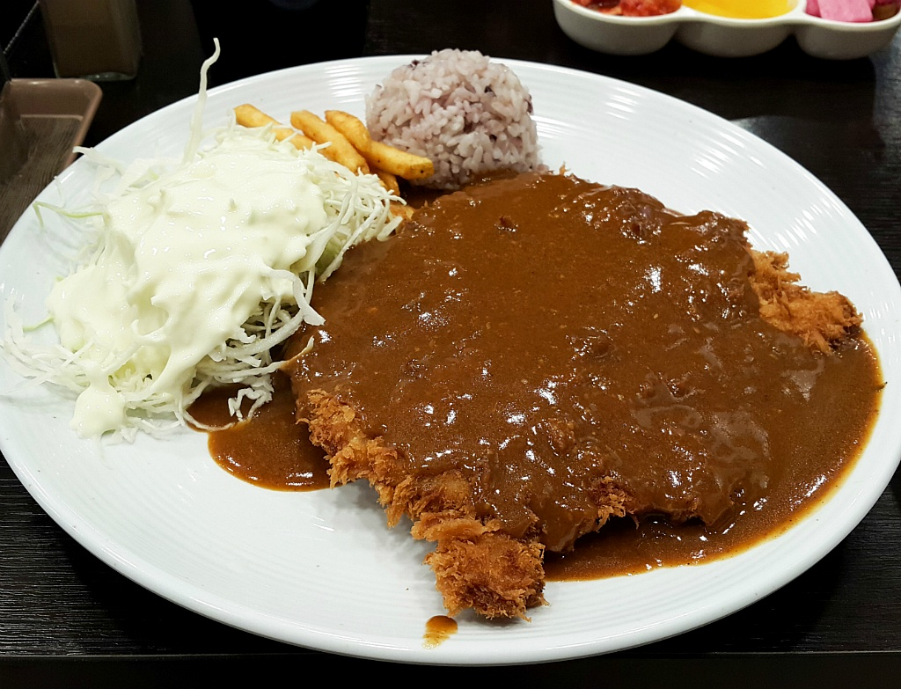

GoodFood top3
Pork cutlet
Ramen
Rib soup
DONKATSU

돼지고기를 저민 후 튀김옷을 입혀 튀겨낸 튀김 요리.
일본풍 서양식(화양식)이라고 하면 가장 먼저 떠오르는 대표적인 음식으로, 일본 내에서는 카레라이스, 고로케와 더불어 다이쇼 시대에 들어온 3대 양식으로 손꼽힌다.
대한민국에서는 일반 식당 및 분식점[3]에서 외식 메뉴로 꾸준히, 널리 사랑받고 있는 음식이다.